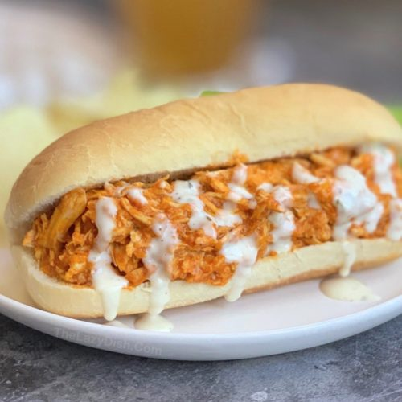

Buffalo Chicken Sandwich

Description
A simple, hearty chicken sandwich that can be ready in under 15 minutes.
Ingredients
- Chicken Thigh (500g)
- Onion, chopped (1)
- Salted Butter (1 tablespoon)
- Hot Sauce
- Sandwich Bread, lightly toasted
- Ranch Sauce
Steps
- Pan-fry the chicken and onions with salt & pepper. Remove from pan and leave to rest, then cut the chicken to bite-size pieces.
- Add the Butter & Hot Sauce to the pan and mix.
- Add the cooked Chicken & Onions back to pan, mix with the sauce and cook through.
- Build the sandwich; bread at the bottom, add the chicken and sauce, and drizzle the ranch sauce on top.